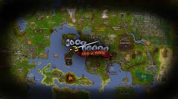

Welcome to the world of Old School Runescape, a fantasy game filled with adventure, exploration and community. Create your character, choose a skill path and join the legacy of millions of players who have been immersed in this game for more than a decade. Start your journey today!
Old School RuneScape is a massively multiplayer online role-playing game developed and published by Jagex. The game is based on the 2007 version of RuneScape but with improvements and new content added since then. The game can be played on both desktop and mobile platforms.
When you first start the game, you will be prompted to create your character. You can choose from a variety of different hairstyles, facial hair, skin tones, and clothing. You can also choose your character's name. Once you have created your character, you will be taken to the tutorial island where you will learn the basics of the game.
Before jumping into quests and exploration, learn the basics of Melee, Ranged and Magic combat. Practice on low-level monsters to gain experience and level up.
Complete Tutorial Island to learn the core mechanics of the game. You will learn about navigation, quests, and trading. Each step will add to your experience points and teach you valuable skills.
Open the quest journal and start following the free-to-play quests. Each quest offers unique challenges and rewards, and will take you on adventures throughout the game world.
The combat system in Old School RuneScape is simple yet engaging. Players have multiple combat styles to choose from, such as melee, range, and magic. There are hundreds of monsters to fight, each with its strengths and weaknesses.
Old School RuneScape has 23 unique skills to train, from Woodcutting to Fletching to Herblore. Each skill has its purpose and can be trained in various ways. The higher the skill level, the more rewards and opportunities for new content become available.
The game has a thriving in-game economy, with players buying and selling goods with each other. From raw materials like logs and ores to finished products like weapons and armor, the economy is entirely player-driven.
The game world is vast and varied, with many different regions to discover. From the bustling cities of Varrock and Falador to the desolate wastelands of the Wilderness, there's always something new to explore.
The game has a strong sense of community, with players interacting with each other through chat, clans, and events. The game hosts regular in-game events, such as seasonal events or competitive PVP tournaments.
The game has a vast array of cosmetic items for players to customize their characters. From armor to hats to weapons, players can create a unique look for themselves within the game world.
Beware of dangerous creatures and enemy players who could attack you. If in doubt, teleport to a bank and use the chat platform to ask for help or join a clan.